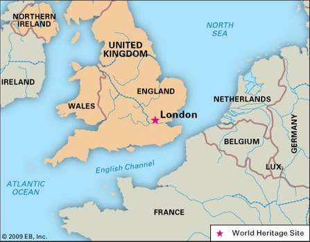
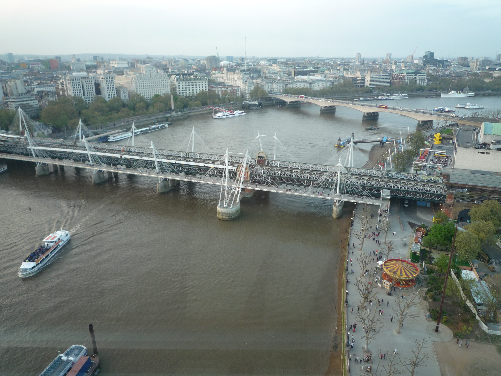

GEOGRAFIA LONDREI
Londra Mare acoperă o suprafață de 1579 km². Londra este port pe Tamisa, râu navigabil. Râul a avut o influență majoră în dezvoltarea orașului. Orașul a fost fondat pe malul de nord, iar până în secolul al XVIII-lea nu a existat decât un singur pod, Podul Londrei, ceea ce a făcut ca orașul să se dezvolte foarte mult la nord de râu. Câmpia Tamisei a fost un teren propice pentru expansiunea orașului, cele câteva coline (ex. Parliament Hill, Primrose Hill) nu au fost piedici semnificative.
În secolele trecute Tamisa era mult mai largă și mai puțin adâncă. Pe întinderea orașului însă a fost canalizată și îndiguită, și mulți dintre afluenții săi au fost complet canalizați și curg acum subteran. Fluxul și refluxul se fac simțite pe Tamisa. Este unul din motivele pentru care Londra este expusă inundațiilor. Pentru a proteja orașul, în anii 1970 s-a construit la Woolwich, în aval, un sistem de ecluze numit Thames Barrier.
Clima Londrei este temperată, cu veri calde, dar rareori toride, și ierni blânde. Vara, temperatura depășește rareori 33 °C (recordul absolut fiind 37,9 °C, înregistrat în 2003). Iarna, căderile de zăpadă sunt rare, iar stratul de zăpadă nu depășește în general 2 cm. În ciuda reputației de oraș "ploios", Londra primește anual circa 600 mm de precipitații, adică mai puțin decât, de exemplu, Roma sau Sydney. Datorită întinderii zonei construite, Londra este adeseori un microclimat, unde temperaturile sunt cu circa 5 °C mai ridicate decât în exterior, deoarece clădirile și betonul rețin mai bine căldura.